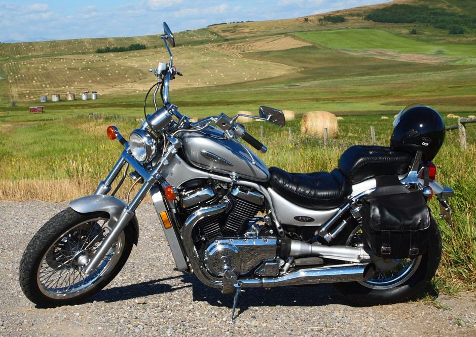

Типы мотоциклов – Дорожные мотоциклы
Нейкеды
Термин нейкед (от англ. naked – голый) применяется для мотоциклов, лишенных обтекателей, которые закрывают двигатель и раму, мало пластика. Нейкеды обычно не очень быстрые – а если да, то крайне редко. К этой категории можно отнести как “оголенные” мотоциклы спортивного силуэта, так и современные машины классического стиля.
Положение водителя на этом типе мотоцикла удобно и расслабленно – достаточно вертикально, но в то же время в легком наклоне вперед – что-то между полностью вертикальным положением водителя круизера и положением водителя спортивной машины.
Эти типы мотоциклов, из-за их универсальности и гибкости, часто рекомендуются для новичков – ведь в этих мотах хотя и помалу, но есть все.
Примеры:
.jpg)
Honda Hornet CB600F – типы мотоциклов
Круизеры
Круизеры, в народе называемые крейсерами, – это мотоциклы, стилизованные под легендарные американские машины, такие как Harley-Davidson или Indian. Характеризуются низким расположением сиденья водителя и удлиненным рулем – что заставляет водителя сидеть строго вертикально или, наоборот, слегка под углом, откинувшись слегка назад. Ноги водителя выдвинуты вперед – словом, все в этих мотоциклах сделано для того, чтобы водителю было удобно.
Круизеры обычно “блестят” хромом, имеют двигатель в системе V и оснащены кожаными седлами и спинками. Можно сказать, что круизеры -это туристические мотоциклы с определенным классическим внешним видом.
Круизеры, как правило, довольно массивны и ими сложнее управлять, чем средними мотоциклами, поэтому они не рекомендуются новичкам.
Примеры:
Suzuki Intruder CS1400
К кастомам, то есть мотоциклам, созданным по индивидуальному заказу, можно отнести, среди прочего:
- Стритфайтеры (Streetfighters) – спортивные мотоциклы без обтекателей, предназначенные для городской езды.
- Бобберы – мотоциклы, стилизованные под машины периода Второй мировой войны. Переделывались из серийных мотоциклов таким образом, чтобы изрядно “похудеть” – избавившись от лишних деталей, не нужных для движения, стремясь тем самым к максимальному уменьшению массы.
- Кафе рейсеры – легкие и оптимизированные для быстрой езды на короткие расстояния мотоциклы, намекающие на стилистику гоночных машин 60-х годов. Отличительными особенностями являются m. in. двигатели, “тонкий” топливный бак и низко расположенный руль. Термин café racer пришел из 60-е годов и происходит из гонок, какие были частыми среди британских любителей мотоциклов – от кафе до кафе.